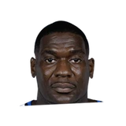

A less likely friendship, however, was the one that he formed with the mercurial Rodman.
“Dennis was so far outside of our monoculture of basketball that I was intrigued by that,”

Every quote from Luc Longley about Dennis Rodman in the archive, newest first. Each one links to its original source.
A less likely friendship, however, was the one that he formed with the mercurial Rodman.
“Dennis was so far outside of our monoculture of basketball that I was intrigued by that,”
“I felt like I sat outside the sort of the stereotypical basketball frame and Dennis did too. So I was attracted to him. And I think he’s probably attracted to me.”
“I tended to roll with Dennis a bit after the game and ended up in some places that I wouldn’t have otherwise ended up in, which I’ve put in the life experience bag,”

Shawn Kemp on Dennis Rodman2 quotes